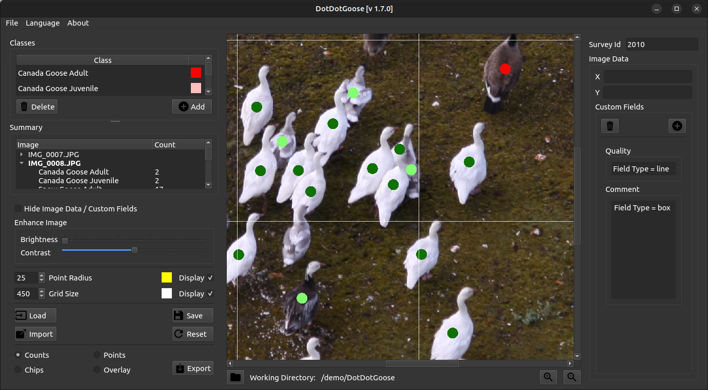
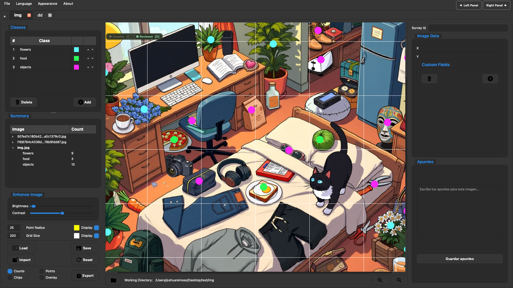

Dot Target Counter is a free, open source tool for manually counting objects in images. Built on DotDotGoose — now with workspaces, tabs, keyboard-first workflows, and a modern interface.

The proven AMNH tool for placing points on images. Solid foundation — single-folder workflow, classic interface.

Same counting mission — workspaces with tabs, collapsible panels, in-app notes, multiple themes, and a full shortcut system.
Everything you loved about DotDotGoose — now with the workflow you actually need in a real research environment.
No more single-folder limitations. Open entire projects with multiple subfolders and work across all of them simultaneously — without closing and reopening the app.
Each subfolder gets its own tab. Switch between datasets in a click. Work on multiple image sets in parallel, exactly like a modern IDE.
Collapse both side panels with a single shortcut. Your image takes center stage — no distractions, no clutter. Pure focus on what matters: the data.
Every action has a key. Switch modes, navigate images, toggle panels, create classes, undo/redo — all without touching the mouse. Your flow stays unbroken.
No notebook nearby? No problem. Jot down observations per image directly in the app. We save them automatically alongside your point data.
Dark, Navy, Nature Green, Night Forest, Pokémon, Light — pick the palette that fits your lab environment. Your eyes will thank you after a 6-hour counting session.
Every critical action is one keystroke away. Your hands stay on the keyboard, your eyes stay on the image.
Human expertise. AI acceleration.
Automatically detect, segment, and classify objects in your images — seeds, colonies, cells, anything. The model places the markers. You verify, correct, and stay in control. Your expertise drives the science; the AI handles the repetition.
Biotechnology meets computer science — building tools for real research.
Because together, we're better.
"You dot the target, we'll count it."
Free & open source · GPL-3.0 · Built with PyQt6 · Based on DotDotGoose by AMNH